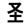
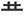

(leftheart)
+
(leftheart)
+  (take a dump)
(take a dump)
| KAI |
Charlie Brown, is suspicious of the KITE eating tree |
|
When my boyfriend acts suspicious and shady around other girls it is like he is totally dumping on my heart. This will be the theme of my next singer/songwriter album, I am auditioning nylon string guitarists now. |
| あや*しい |
suspicious. Not like "I'm suspicious of him," but like "He's acting shady."
★★★☆☆ |
| 妖怪 |
traditional folk monster. ★★★☆☆ a traditional Japanese monster from folk tales. They have physical forms, but don't necessairly attack people. More like the European "fairy" than "monster. |
| 怪獣 |
Godzilla monster
★☆☆☆☆
one of them 400-footer godzilla monsters with the zipper on the back. |
| 怪我 |
scar
★☆☆☆☆
FPKANA
injury. I am GUESSING that the difference between 怪我 and its synonym 傷 (kizu), is that kega emphasizes the severity while 傷emphasizes the appearance- spots, cuts, scabs, etc. Also, another difference is that nobody uses 怪我 with kanji, and hardly anyone even uses the hiragana, thus making the whole fucking point moot. |
| Meaning | Hint | Radical | |
|---|---|---|---|
| 軽 | lightweight | CAR | 車 |
| 怪 | suspicious | HEART | 心 |
| 径 | diameter | GO | 行 |
| 経 | experience | STRING | 糸 |
The new CAR is lightweight but
suspicious HEARTS are hard to mate.
I'll GO walk around the diameter,
and measure the length of my experience with STRING.
| Meaning | Hint | Radical | |
|---|---|---|---|
| 怪 | suspicious | TAKE A DUMP |  |
| 惜 | close but no cigar | HELLBUNNY |  |
I'm suspicious that your mom was the one who TOOK A DUMP on the lawn.
I tried to catch the HELLBUNNY but no cigar!!
|
ghost, monster
幽霊 妖怪 おばけ 悪霊 |
|
outrageous
ムチャクチャ 怪しからん 無茶 ばかげてる みっともない だらしない |
|
wound
傷 怪我 |
 KANJIDAMAGE
KANJIDAMAGE